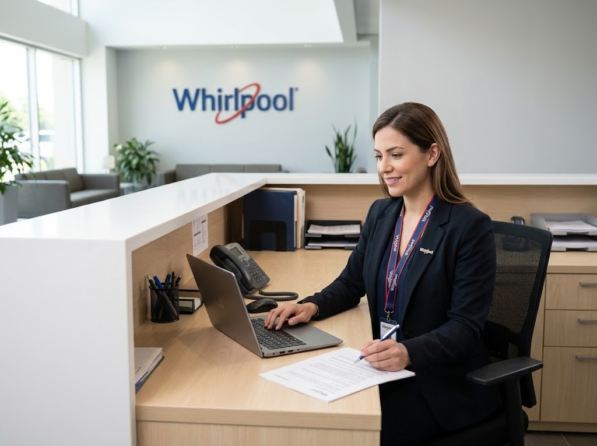

Reparación de lavadoras Whirlpool en Cerro Viento
Servicio técnico Whirlpool a domicilio en Cerro Viento para lavadoras: diagnóstico en el sitio, costo claro antes de reparar y garantía en la pieza y la mano de obra.

Técnico de lavadoras Whirlpool en Cerro Viento
Aquí hay muchas casas y residenciales con lavandería o terraza. Revisamos también las condiciones del lugar donde está el equipo: ventilación, humedad, tomacorrientes y desagües.
En casas, las variaciones de voltaje y la humedad de las áreas externas son causas frecuentes de fallas; te recomendamos protegerlos y te explicamos cómo.
¿Cuánto cuesta reparar una lavadora Whirlpool en Cerro Viento?
Depende de la falla y de la pieza. Te damos el costo de la visita antes de ir y el de la reparación antes de empezar el trabajo, con garantía sobre la pieza y la mano de obra.
Lavadoras Whirlpool de carga superior y frontal
Conocemos las líneas más usadas de Whirlpool: lavadoras de carga superior con agitador, de carga frontal y con sistemas de sensores que ajustan el ciclo. Revisamos tarjeta electrónica, bomba de desagüe, válvula de entrada de agua, seguro de la puerta, amortiguadores y rodamientos.
Fallas de lavadoras Whirlpool que atendemos en Cerro Viento
- No centrifuga o centrifuga con mucho ruido: Carga desbalanceada, amortiguadores o rodamientos desgastados, o problema del motor.
- No desagua (queda agua en la tina): Filtro de desagüe tapado, bomba de desagüe o manguera obstruida.
- No llena de agua o llena muy lento: Llaves cerradas, malla de la manguera tapada, válvula de entrada o sensor de nivel.
- Gotea o se sale el agua: Mangueras flojas, empaque de la puerta (en carga frontal), bomba o tina.
- La puerta no abre o no cierra: Seguro de la puerta (cerradura) o bisagra desgastada.
Consejo de mantenimiento
Revisa las mangueras cada 6 meses: busca grietas o humedad.
Preguntas frecuentes en Cerro Viento
¿Reparan lavadoras Whirlpool en Cerro Viento?
Sí. Damos servicio técnico a domicilio de lavadoras Whirlpool en Cerro Viento (Ciudad de Panamá). Escríbenos por WhatsApp con el modelo y la falla y te confirmamos la visita.
¿Cuánto tardan en llegar a Cerro Viento?
Coordinamos visitas en 24 a 48 horas en la mayoría de las zonas, según disponibilidad.
¿Cuánto cuesta el servicio técnico de la lavadora Whirlpool en Cerro Viento?
Te confirmamos el costo de la visita antes de ir y el de la reparación antes de empezar, según la falla y el modelo.
Guías de lavadoras Whirlpool
Otros equipos Whirlpool en Cerro Viento
Lavadoras Whirlpool en zonas cercanas
Búsquedas relacionadas en Cerro Viento
¿Tu lavadora Whirlpool falla en Cerro Viento?
Escríbenos por WhatsApp con el equipo, el modelo y la falla. Te confirmamos disponibilidad para tu zona en minutos.